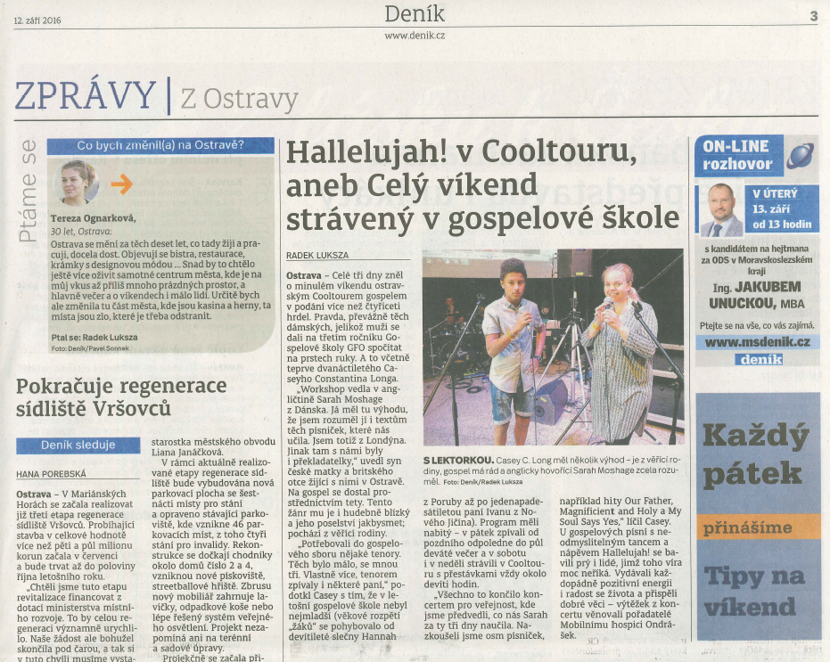
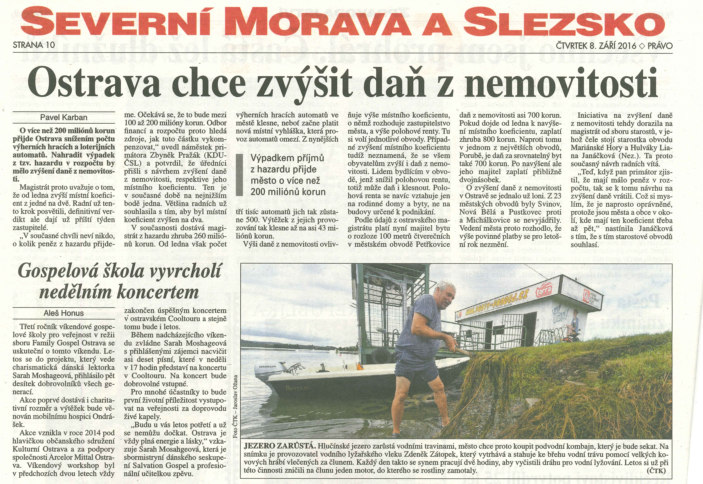

Co na to zpěváci?
-

Michala R. K.
Byla to má první zkušenost s gospelem a moc jsem se bavila. Jste úžasní lidé, kteří drží spolu, podporují se navzájem a celý víkend i koncert byl ve skvělé atmosféře. Velký dík organizátorům, vše bylo báječné A díky za obohacení, jak lidmi, tak i krásnými melodiemi.
-

Neli N.
Taková nádherná atmosféra. Jste úžasní a mám Vás všechny moc ráda, jste moje velká rodina. Děkuji za vše.
-

Dita G.
Bylo to krásné seznámení - s úžasnou atmosférou, krásnými melodiemi a nadšenými lidmi! Děkuji za super náladu, co se mi pěkně vpila do kůže…
-

Kateřina F.
Jsem unavená, ale setkání s Vámi všemi bylo fakt úžasné. Díky za každou jednu minutu prozpívaných gospelových dní.
-
Honza H.
Nádherný weekend lidi :-) Sice návrat do práce je pak jako rána kladivem, ale stálo to za to… i s cestou z Prahy :-)
-
Sylva Š.
Hezky pracovní den všem. Unavená, ale pořád plná energie z úžasného víkendu. Pořád si tancuji a zpívám.
-
Karolína A.
Chci Vám všem moc poděkovat! Tímto víkendem jsem opět obohacena nejen na duši :) V hlavě mi stále zní dokola písničky, texty a jak nám to skvěle šlo! Vážně jsem si to moc užila. Na jednu stranu jsem unavená, na druhou ale cítím, že mám v sobě po tomhle víkendu hooodně energie… Mějte se krásně.
-
Barbora K.
Také se přidávám a moc děkuji za tento nezapomenutelný zážitek! Momentálně se cítím jako dítě, které se vrátilo z letního tábora, který si maximálně užilo a je mi tak trochu smutno, že něco tak báječného skončilo… Díky všem a velký obdiv Sáře! 😘💞
Co o nás říkají?
Reportáž České televize z Gospelové školy FGO – 12. 9. 2016: https://youtu.be/X3gFGDAgwso
Ostravan.cz – 12. 9. 2016: http://is.gd/fgo_ostravan
Deník – 12. 9. 2016:
Právo - 8. 9. 2016:
